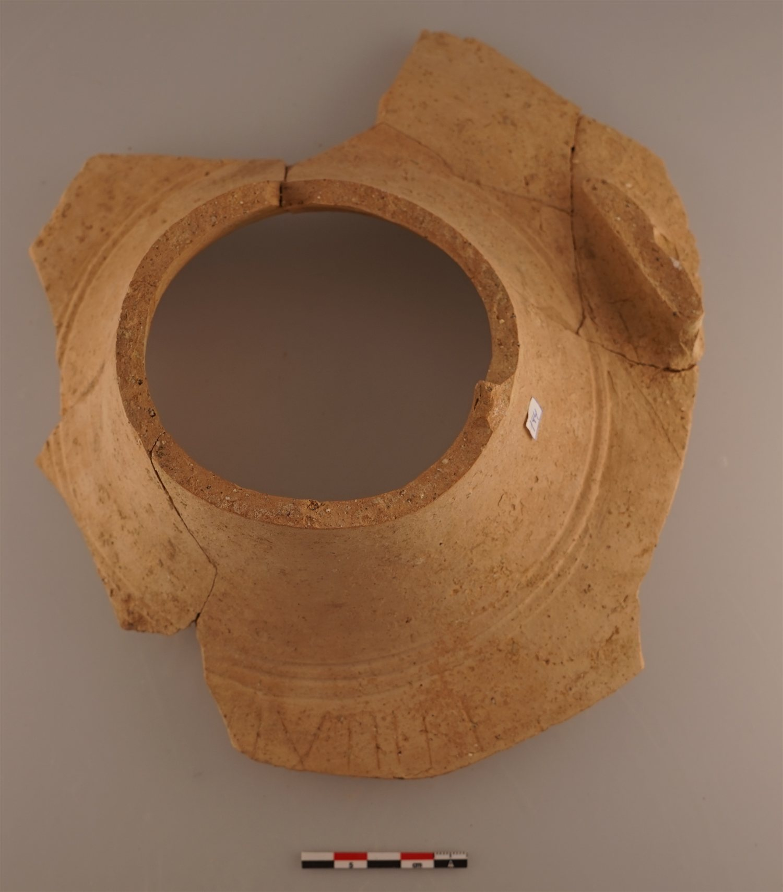
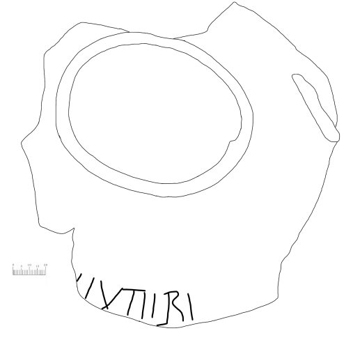
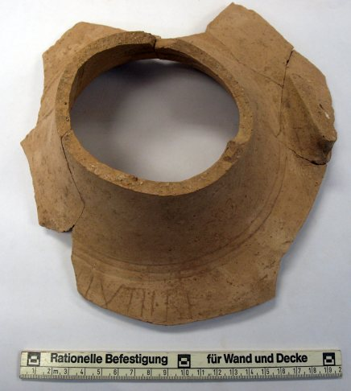

Grafito con el nombre [El]euteri o [D]euteri sobre ánfora (Cara, Santacara, Navarra)
Cara (Santacara, Navarra), Hispania citerior






Texto
Otras lecturas posibles
- [D]EVTERI
Aparato crítico
Dos reconstrucciones posibles del nombre: [El]euteri o [D]euteri. Ambas cuentan con paralelos en Hispania, aunque ninguna estaba recogida hasta ahora en el territorio de la actual Navarra.
Comentario
Grafito sobre el hombro de un ánfora de pasta clara, junto al asa, realizado después de la cocción. Es el único grafito epigráfico sobre ánfora de los publicados de la campaña de 1982. Las dos opciones de reconstrucción del nombre cuentan con paralelos en Hispania, pero ninguna se había documentado antes en Navarra.
Descripción
- Soporte
- Fragmento de boca de ánfora de pasta clara, de la misma tipología que los tituli picti nº 4 y 6 del artículo de 2020. Recuerda a una Dressel 2-4 (en el artículo de 2018, «probablemente una Dressel 2-4»), pero la pasta no corresponde a las producciones layetanas.
- Disposición
- Grafito en el hombro, junto al asa. Realizado post cocturam. Fragmento de boca de 11,5 cm.
- Lugar de origen
- Cara (Santacara, Navarra), Hispania citerior
- Hallazgo
- Excavaciones de M.A. Mezquíriz en Santacara, campaña de 1982 (Td. 3, estrato I, 6 de diciembre de 1982).
- Ubicación actual
- Almacén de Arqueología del Gobierno de Navarra, n.º inv. Caja 2219
- Sigla
- Sant. 82. Td.3. Estrato I. 6/XII/82
Bibliografía
- P. Ozcáriz Gil, «Sellos, tituli picti y grafitos sobre instrumentum procedentes de la ciudad de Cara (Navarra)», Ex Baetica Romam. Homenaje a José Remesal Rodríguez (2020).
- P. Ozcáriz Gil, ««Excavando» en lo ya excavado: grafitos epigráficos de la campaña de 1982 de la ciudad romana de Cara (Santacara, Navarra)», Studia Storica in honorem Prof. Urbano Espinosa Ruiz (2018), pp. 109-131.
Cómo citar esta ficha
Ozcáriz Gil, P., Grafitos sobre cerámica romana: corpus EpiDoc, ficha cara-002-euteri, https://pozcariz.github.io/grafitos-epidoc/cara-002-euteri.html.